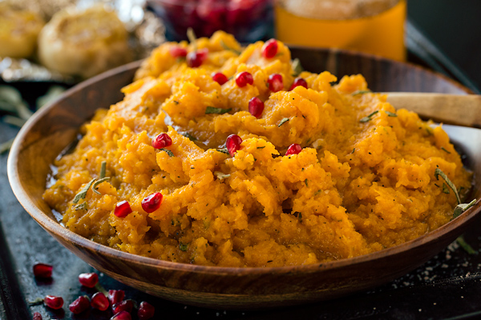

Butternut Squash Mash

Description
Butternut squash mash is a recipe with endless variation.
I have personally not made this recipe yet but it's one I will do over and over in different iterations until I'm satisfied.
Consider this a prototype recipe.
Ingredients
- 2 Medium Sized Butternut squash
- 1 Bag of Estrella linschips
- 100G Tomato pure
- 400G Crushed tomatoes
- Tapenade
- 3 Avocados
- Cut the butternut squash in half, take out the seeds with a spoon, put it in a pan and put it in the oven for 1 hour 50 minutes at 175C
- Drizzle olive oil until it covers a medium sized pan
- Put the tomato paste in the pan and fry it for around 5-10 minutes.
- Throw in the crushed tomatoes & Tapenade
- Take the Estrella linschips and blend them in a food processor. Put the crumbs in the pan.
- When the butternut squash is done take the flesh out with a spoon and put it in the pan.
- Stir it all together and you're done. Enjoy!